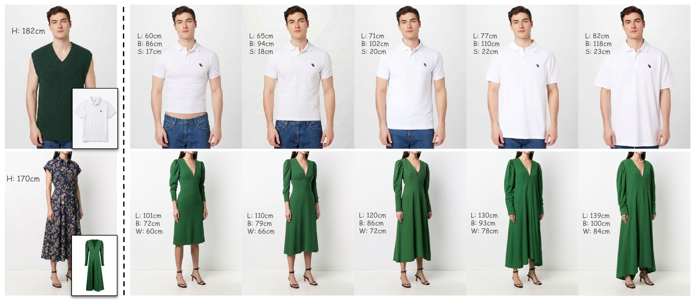
Measurement-conditioned virtual try-on with RealFIT. Given an input person of height H and a layflat garment (left), RealFIT synthesizes photorealistic try-on results conditioned on physical garment measurements in centimeters (right; L: length, B: bust, W: waist, S: sleeve length), smoothly transitioning from tight to oversized fit with authentic fabric drape.
The core value of real-world try-on lies in allowing consumers to both a) visualize how a garment looks on themselves, as well as b) see how a garment will fit on them: whether any given size will stretch tightly over body contours, or drape loosely with excess slack. Prevailing Virtual Try-On (VTO) models address the first use-case, but ignore the second: by conditioning solely on 2D visual inputs, they default to synthesizing deceptively well-fitted try-on results regardless of garment dimensions. Data scarcity is a central bottleneck for developing fit-accurate VTO systems. Standard public benchmarks consist of catalog imagery lacking both garment dimensions and body measurements. While recent synthetic approaches leverage 3D physics simulation to generate exact measurement labels, they suffer from sim-to-real domain gaps and remain constrained to simplistic garment topologies.
In this work, we address the issue of fit through RealFIT, the first framework for scalable, real-world measurement-conditioned virtual try-on across diverse and structurally complex apparel categories. To bridge the data gap, we introduce a multi-tier data hierarchy that bootstraps geometric priors from large-scale web retail metadata and VLM-assisted measurement annotations, anchored by a newly curated real-world dataset with tape-measured metric ground truth. Using this data, we propose a fit-aware virtual try-on model based on flow matching that integrates a dedicated measurement encoder to condition generation on human and garment dimensions. To enhance the model's sensitivity to metric conditions, we also introduce a Localized Metric Contrastive (LMC) loss, which explicitly boosts the conditioning signal by contrasting velocity fields across paired sizing perturbations within targeted regions. Furthermore, we establish a systematic evaluation protocol to benchmark fit accuracy. Extensive experiments demonstrate that RealFIT achieves state-of-the-art photorealism and fit accuracy and controllability across varied body geometries and complex garment styles. We plan to release our benchmark dataset, evaluation suite, and code upon acceptance.
Qualitative results of RealFIT across increasing garment measurements, scaled from −20% to +20%.
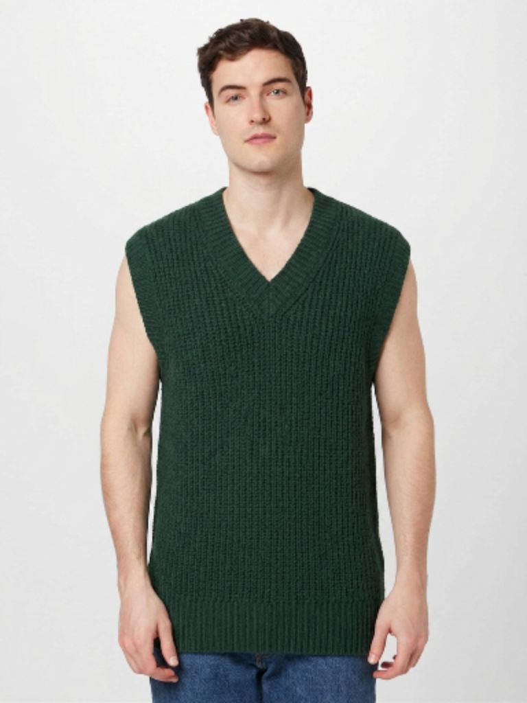
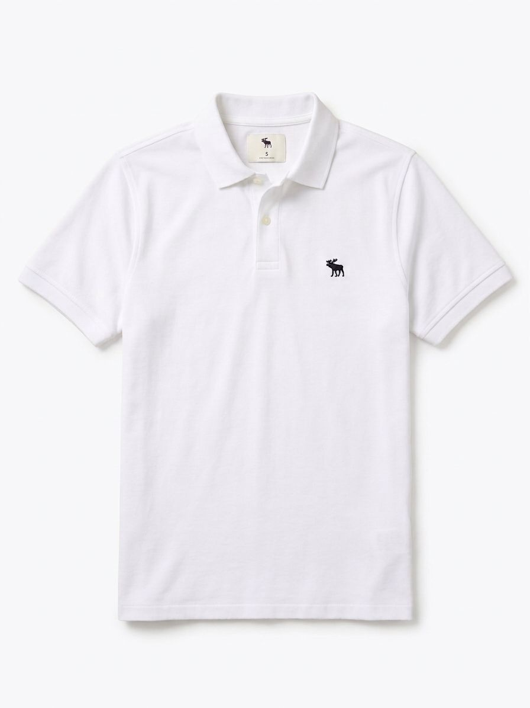
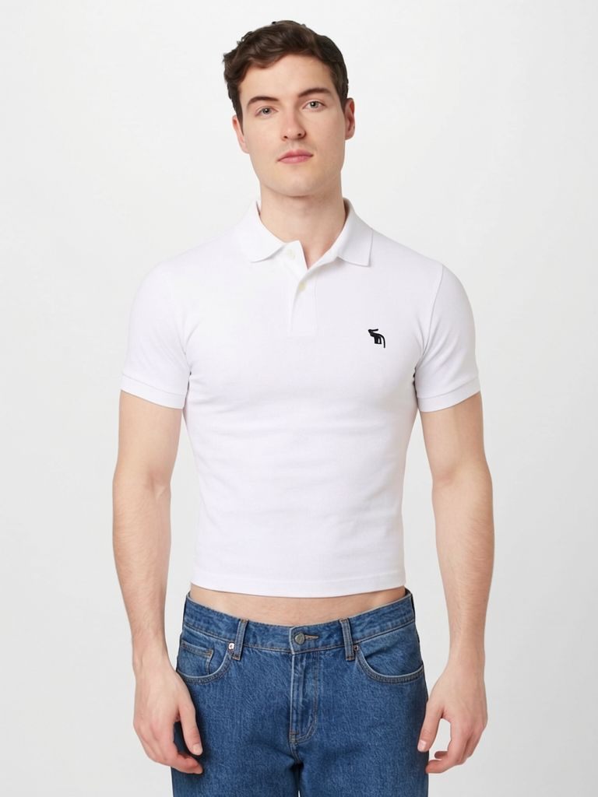
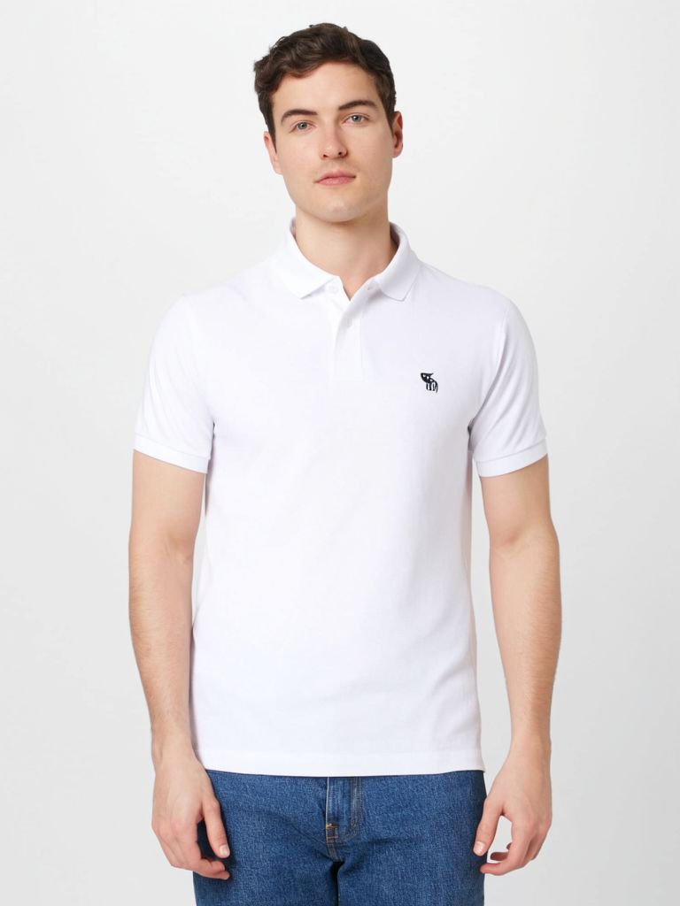
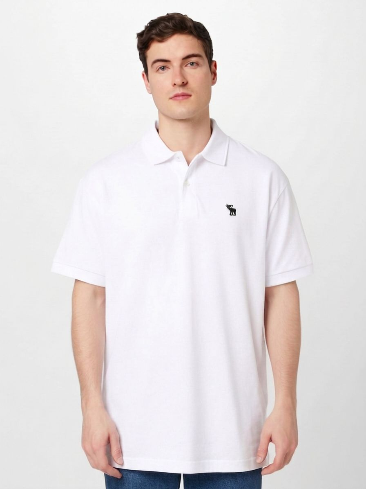
Starting from the input person and layflat garment, we vary a single measurement (Length, Sleeve, or Bust) or vary wearer height H while holding all other dimensions fixed.
Vary a single garment dimension (±10%) while holding all other entries in m fixed at +0%.
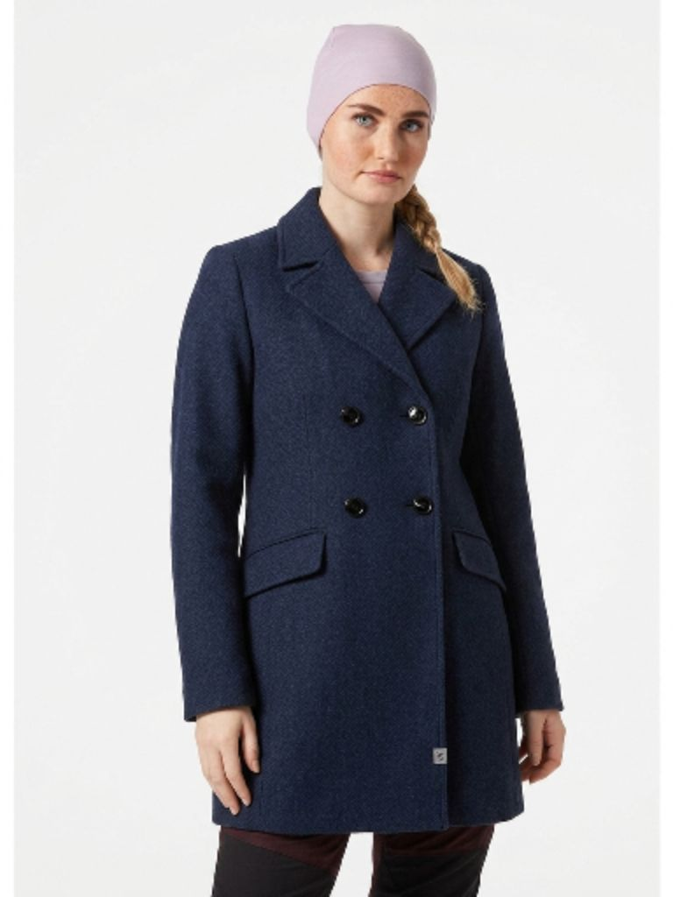
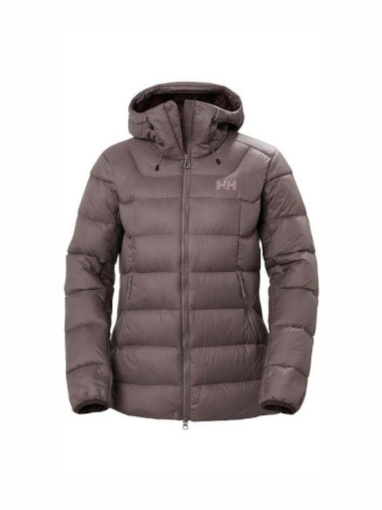
Emergent independent control over individual garment dimensions. Starting from the input person and layflat garment (left), we vary a single measurement by ±10%, garment length (Length Change), bust (Bust Change), or sleeve length (Sleeve Length Change), while holding all other dimensions in m fixed at +0%. Although garment dimensions are strongly correlated in real-world training data and are never explicitly disentangled during training, RealFIT learns to adjust each dimension independently without altering the others.
Hold garment dimensions fixed in cm while varying wearer height (±10 cm).
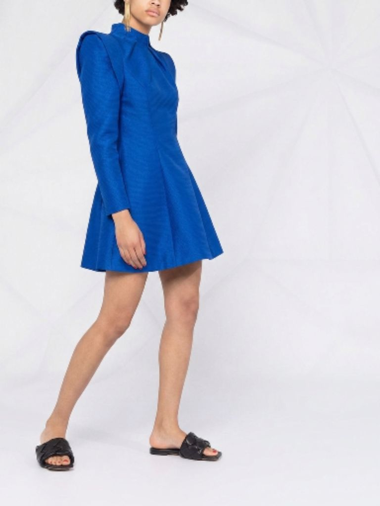
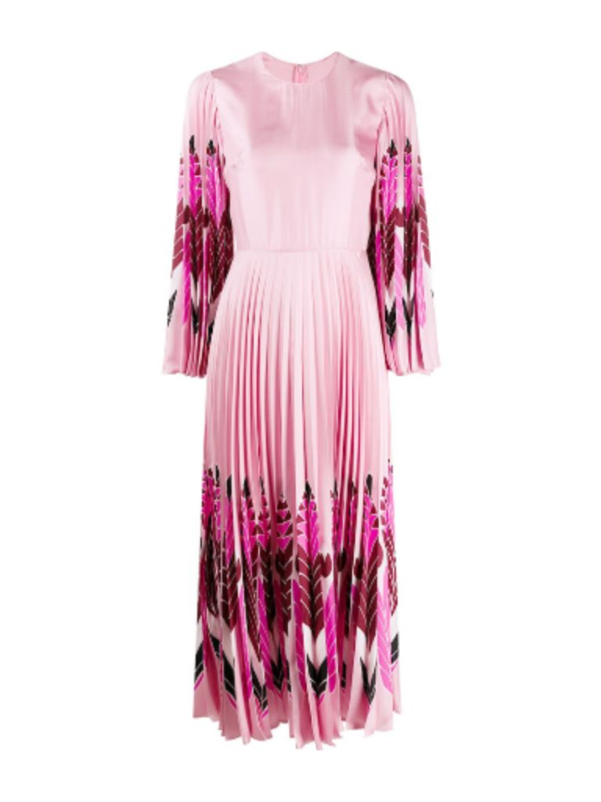
Varying height H. Holding the physical garment measurements fixed in centimeters while decreasing the subject height H (e.g., from 175 cm to 155 cm, or from 192 cm to 172 cm) causes the exact same garment to cover a progressively larger proportion of the body.
Compare Ground Truth (Igt, Input Size) alongside all six methods across −10%, Input Size, and +10%.
Qualitative comparison on RealFIT-Web and RealFIT-Bench. For each example, the left column shows the ground-truth image Igt corresponding to the Input Size alongside the input person and garment. Each method generates three try-on results with garment dimensions varied by ±10% (−10%, Input Size, and +10%). RealFIT (Ours) matches Igt at the input size and achieves accurate, consistent size changes across scales with high visual quality.
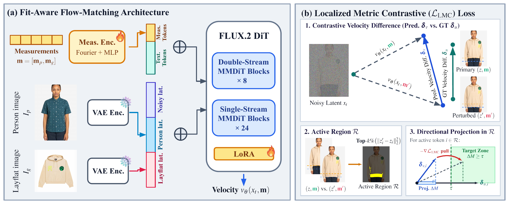
RealFIT overview. (a) The reference Ip and layflat garment Ig are VAE-encoded and sequence-concatenated with the noisy latent xt in the image stream, while measurements m = [mp, mg] are Fourier–MLP embedded and prepended to the text tokens. (b) LMC evaluates vθ twice on a shared xt, under m and stop-gradient m', and aligns the predicted velocity difference δv with the ground truth δu = z' − z inside the top-k% active region R.
For synthetic 3D physics-simulated fit-aware virtual try-on, please also check out our prior work: FIT: A Large-Scale Dataset for Fit-Aware Virtual Try-On (Wang, Karras, Li, and Kemelmacher-Shlizerman, SIGGRAPH 2026).
@article{wang2026realfit,
title = {Measurement-Conditioned Virtual Try-On},
author = {Wang, Yuanhao and Ramakrishnan, Varsha and Seitz, Steve and Kemelmacher-Shlizerman, Ira},
journal = {arXiv preprint},
year = {2026}
}